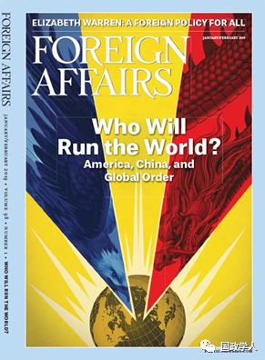

收录于合集

简 介
【作者】
Andrew F. Krepinevich, Jr.，哈德逊研究所（Hudson Institute）高级研究员，新美国安全中心（the Center for a New American Security, CNAS）兼职高级研究员,美国国防战略委员会成员。
【编译】 刘瑛琛
【校对】 蔡 宇
【审核】 陈舜波
【文章来源】
Foreign Affairs, Volume: 97, Issue:2, Pages：62-74

【期刊简介】
Foreign Affairs, 成立于1922年，由美国深具影响力的外交关系委员会出版的双月刊，是美国最具影响力的外交政策杂志之一。根据2014年的期刊引文报告（Web Of Science），该期刊的影响因子为2.009，在“国际关系”类别的85种期刊中排名第6。(维基百科)
正 文
恐怖平衡的侵蚀与核威慑的弱化 ****
The Eroding Balance of Terror: The Decline of Deterrence
Andrew F. Krepinevich, Jr.
1 引 言
几十年来，美国的政策制定者始终将核威慑作为美国国防战略的核心。核威慑即以强大的核力量作为威胁，迫使对手在任何情况下都不敢率先发动战争的战略。核威慑战略主要通过改变对手对成本、收益和风险的计算来发挥作用，通常可以被划分为抑阻性核威慑（deterrence through denial）与惩罚性核威慑(deterrence through punishment)两种形式。前者通过建立有效的防御能力，使对手认为发动进攻并成功达到预期目的的可能性非常之小，甚至进攻本身就不值得尝试；后者则通过保证迅速和压倒一切的反击能力，令对手感到发动进攻得不偿失，从而放弃进攻。但无论面对的是抑阻性威慑还是惩罚性威慑，只要对手是理智的，都会选择按兵不动。
核威慑战略有效地维持了大国之间几十年的和平，即使是在冷战结束三十多年后的今天，它仍旧居于美国国防战略的核心地位。几十年来，威慑战略被强调了无数次，其核心信条已不言自明：核武器的破坏力使任何理性的领导人不敢贸然挑起战争，因此对威慑的要求也相对较低。
但随着技术和地缘政治格局的变化发展，以威慑制止侵犯变得愈发困难。首先，全球军事力量对比的格局，已从美国一家独大，转变为中、美、俄三强鼎立；其次，军事竞赛扩展到了太空、网络空间和大陆架等几个新领域；与此同时，认知科学的进步颠覆了对人类高风险情况下行为的原有理解，挑战了威慑理论的基础。这些现象引出了一个无法回避又令人不安的结论：当前时代最大的战略性挑战就是核威慑的衰退。
2
多极世界
冷战期间，美苏两个超级大国的军事力量使世界上任何其他国家或组织都相形见绌。苏联解体后，美国的军事力量特别是常规军事力量在全球范围内一家独大。但在今天，美国所面临的是一个核力量多极化的世界，英、法、中、印、巴、朝等多个国家都掌握着核武器，其中中国、朝鲜、印度和巴基斯坦等国的核武器无论在数量还是精密程度上都在不断提升。
正如核战略学家Albert Wohlstetter所言，冷战期间的核威慑是建立在一种“恐怖平衡”或“相互确保摧毁”（mutual assured destruction）的核均势之上的。而在核力量多极化的今天，特别是中国作为一个新崛起的核大国，可能会导致这种“恐怖平衡”失效。简而言之，在一个有着三大核力量的世界中，任何两方的联合都将使核均势不复存在。
3 战争新前线
核威慑之所以会衰退，不仅仅是因为新的力量中心的出现，新型武器的诞生也是重要原因之一，主要表现在以下四个方面：
首先，常规战争与核战争间的界限正逐渐模糊。海湾战争证明了美国常规武器技术足以打击他国的核工厂，使他国的核打击能力趋于失效。这使中、俄两国产生焦虑，尝试将轻量级核武器运用于常规战争之中。然而，美国领导人仍然将核战争和常规战争截然分开，他们相信管控核武器的唯一目的就是阻止其他人使用它们。中国、俄罗斯与美国对常规战争与核战争间相互转化的态度差异，为某方跨越门槛，贸然发动核战争埋下隐患。
其次，网络武器很可能进一步使核威慑趋于失效。网络武器可能破坏一国的指挥系统与预警系统，并有效降低敌军的核反击能力。当一国相信其被反击的风险被削弱，其率先发动进攻的可能性便会大大增加。
第三，核武器部署的战略位置也在削弱核威慑战略的效力。核扩散使各国之间核武器的部署位置相对更近，这意味着当袭击来临时，预警时间将大为缩短。在这种情况下，高层政策制定者不得不使战略力量处于高度警备状态，并将动用核武器的权力下放。在理论上，这可以使威慑加强，但这也提高了意外事件的风险，进而削弱了威慑的效力。
最后，交通、通讯等战争新领域的出现也在削弱威慑的作用。当今世界的主要大国的经济和军事力量，往往建立在由卫星、海底电缆、输油管道等通信、能源运输设施组成的庞大而脆弱的网络上。不幸的是，针对基础设施的攻击成本极低，见效极大。在世界各国高度依赖这些基础设施的情况下，核威慑无疑是成本最高，风险最大的选择。
4 有所得，有所失？
在某种程度上，核威慑战略成为了它自身成功的受害者。战争是对军事力量、权力结构与信仰的最直接检验。但自1945年以来，世界主要大国之间就未发生过战争，这意味着在常规军事力量、核力量与网络军事能力等领域中，理论上的大国间军事力量平衡还未经过实战检验。因此好战分子对各国的军事实力的认识会存在偏差，这进而提升了某一方战略误判的可能性。
5 非理性的思维
认知心理学的最新研究对核威慑战略的基本逻辑提出了质疑。作为一个理论概念，威慑假定在有风险的情况下，人们是理性的，他们根据成本收益计算作出决策，并只在预期收益大于风险的情况下采取行动。
但事实是，人们并不总是通过计算最大化收益进行决策。即便他们进行了成本收益计算，也无法准确理解其对手是如何计算成本、收益和风险的。前景理论指出，人们在风险决策过程中的行为偏好与平时有所区别，人们面对“失”时倾向于冒险一搏，面对“得”时倾向于规避风险。比如说，政策制定者会冒更大的风险保持住他们已有的领土，而非攫取另一片价值相同的外国领土。但当人们衡量“得失”时，这还要取决于政策制定者所谓的参照点，参照点决定了他们将当下的情况定义为失去还是获得。比如说，在一连串的大获全胜后，政策制定者会将参照点调高。如果接下来是一次失败，这时政策制定者会认为他们在失去而非获得，尽管相比最初他们已经获得了许多。而如果他们遭受的是一连串的失败，他们则会孤注一掷而非调低参照点维持住手中剩余的，这时他们会认为自己不是在追求获利，而是在避免损失。
另一方面，所有人都会同样理性地看待一件事情的观念仅仅是一种观念，绝非事实。行为科学的研究表明，文化背景、个人性格等因素会导致人们认知过程中的差异，包括人们对公平、成本、收益与风险等的认知，这些复杂的因素也会使核威慑的效用降低。而个体，也绝对不是效用最大化的机器。当人们认为所接受的东西不公平或有损尊严时，他们会拒绝，即便成本非常之低。这也解释了为什么有些时候领导人会拒绝双赢的交易而不理智地支持对双方都有害的结果。
6 对核威慑战略的修正
综上所述，作者认为美国的政策制定者应当考虑到核力量的多极化、先进武器技术的产生与认知心理学的新发现等因素对传统核威慑理论的挑战，并重新制定行之有效的核威慑战略。为此，作者提出四点修正建议：
对美国来说，这首先意味着要对军事力量平衡进行一个综合性的评估。其次，在评估战争升级的锋线上，政策制定者必须改变他们“升降梯”的模型，而采用“交叉网络模型”。再者，美国还需要提升预警能力与反击能力。最后，尽管人性难以改变，但政策制定者至少应了解前景理论在人们风险决策中的应用，以便更好地制定核威慑战略。
本文由国政学人微信公众平台独家首发
** 扫描下方小程序码查看原文p df**
更多阅读
【地区秩序】阿米塔夫·阿查亚：权力转移还是范式变化？中国崛起与亚洲新兴安全秩序 | 国政学人
国政学人 （ID：guozhengxueren)
为方便学人及时阅读高质量文章
别忘把国政学人设置 星标 哦~